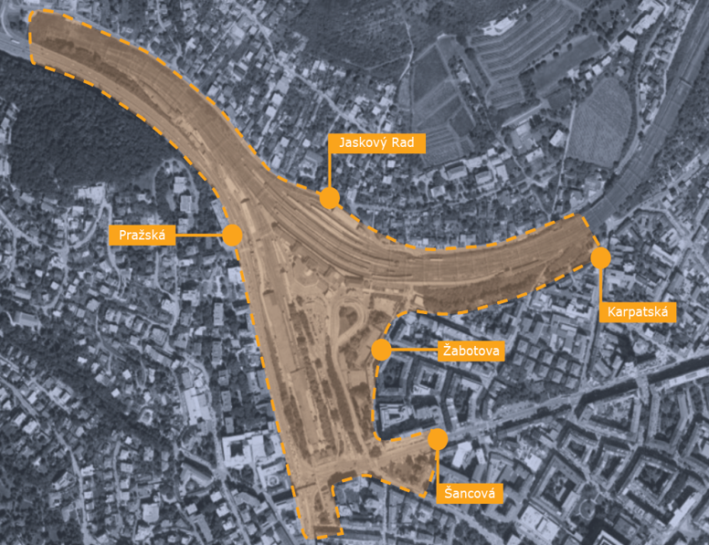
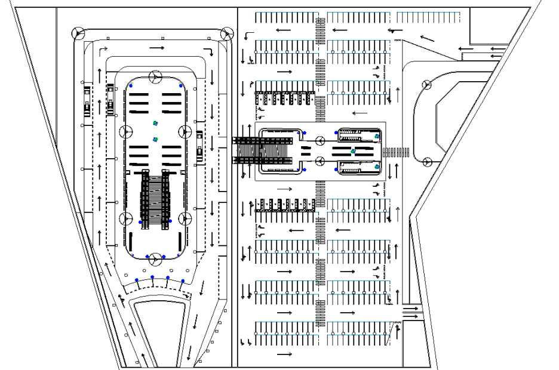
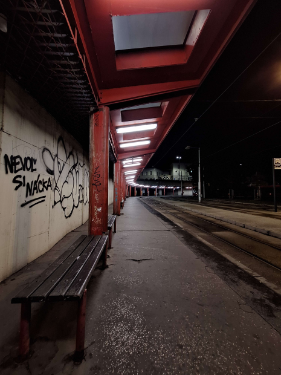
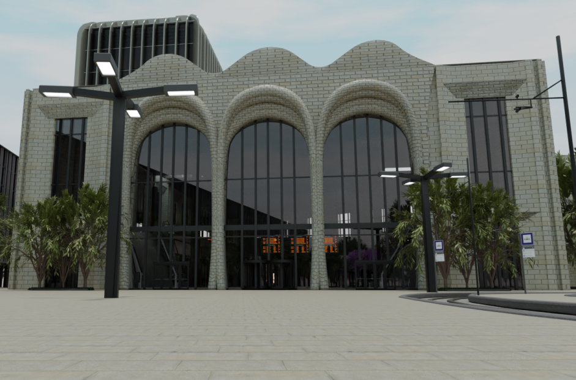
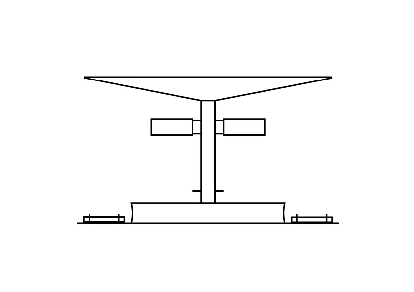

Dôvodom, prečo sme sa rozhodli pre túto tému našej stredoškolskej odbornej činnosti bolo niekoľko faktorov. Všetci traja sme vedeli, že Hlavná vlaková stanica v Bratislave nie je najlepšie navrhnutá a rozhodne nie najkrajšie nadizajnovaná budova v okolí a nespokojnosť obyvateľstva s týmto monumentom to len potvrdzuje, čo nás podnietilo a inšpirovalo k vytvoreniu našej práce.
Obyvateľom Bratislavy najviac prekáža stav hlavnej vlakovej stanice. Ukázali to výsledky septembrového prieskumu agentúry Mnforce. Možnosť “nie som hrdý” alebo “hanbím sa” označilo v prípade vlakovej stanice 88 % respondentov (TASR, 2023, č. 1). O pravdivosti tohto prieskumu sme sa boli presvedčiť, či je tomu naozaj tak. Hneď ako sme na miesto dorazili, spozorovali sme viacero nedostatkov: predstaničný park je v zanedbanom stave, kde najmä materiály ukazujú opotrebovanosť po toľkých rokoch exponovanosti voči ľudom a prírode. Staničná budova na tom nie je oveľa lepšie, aj napriek nedávnej revitalizácii jej stav stále nie je optimálny. Budova prešla poslednou väčšou modernizáciou v roku 1989, kedy jej priestory dočasne expandovali pre nevyhovujúcu kapacitu. V tomto stave zostala pre nezjednotené plány ŽSR a magistrátu mesta do dnešného dňa.
Naša práca je zameraná na dosiahnutie niekoľkých cieľov, ktoré majú za úlohu odstrániť nedostatky hlavnej železničnej stanice a jej okolia. Naša priorita je rekonštrukcia budovy stanice a jej presun smerom na juh. Veríme, že tento krok povedie k výraznému zlepšeniu komfortu cestujúcich.
Hlavným cieľom je preto zväčšiť nástupištia a vytvoriť prostredie, ktoré bude reprezentovať hlavnú železničnú stanicu európskeho mesta. Presunutím stanice smerom na juh sa otvárajú nové možnosti na vylepšenie infraštruktúry a efektívnejšie využitie dostupného priestoru. Okrem hlavného cieľa máme aj niekoľko vedľajších cieľov, ktoré prispievajú k celkovému zlepšeniu okolia. Patrí sem vybudovanie podzemných nástupíšť pre autobusy, čo pomôže optimalizovať dopravný tok a zlepšiť prepojenie rôznych druhov dopravy.
Ďalším dôležitým aspektom je vytvorenie parku pred hlavnou budovou. Tento krok nie je iba estetický, vytvára taktiež príjemné prostredie pre návštevníkov a obyvateľov. V tomto parku sa nachádza množstvo zelene. Stromy v ňom nezohrávajú len dekoratívnu úlohu, ale majú aj praktický význam. Stromy vytvárajú prirodzený tieň, ktorý nie len poskytuje príjemné miesto na oddych, ale tiež výrazne pomáha udržiavať teplotu v parku. V období horúcich letných dní stromy zabraňujú prehriatiu pôdy (povrchu pod nimi) a vzduchu v okolí.
Rekonštrukcia budov podliehajúcich pamiatkovej ochrane vypovedá o našom záujme o zachovanie kultúrneho dedičstva a starostlivosti o historické hodnoty. V neposlednom rade sa snažíme o vytvorenie vizualizácie projektu, aby sme poskytli jasnú predstavu o tom, ako bude nové prostredie vyzerať a aké výhody prinesie mestu.
Celkovo má naša práca ambíciu nielen odstrániť existujúce nedostatky, ale aj vytvoriť moderné, funkčné a príjemné prostredie.
Dôležité aspekty našej práce

Mapa spracovaného územia
Mapa územia s ktorým sme pracovali. Celková rozloha plochy je približne 265 000 m2 a rozlieha sa od Pražškej ulice po Karpatskú. Plocha zahŕňa budovu pôvodnej stanice, staničné múzeá, zastávky MHD a parkovisko, niekoľko vedľajších budov a koľajiská. Všetky pozemky sú vlastnené štátom alebo hlavným mestom.

Pôdorysy
Pôdorysy sú nevyhnuteľnou súčasťou architektúry. Ukazujú nám pohľad, ako a kde sa nachádzajú jednotlivé 3D objekty v 2D priestore pri pohľade zhora. V našej práci našli široké využitie.

Obhliadka miesta
O skutočnom stave budovy a jej okolia sme sa boli sami presvedčiť. Areál je už dlhé roky ničený vandalmi, príroda zanechala tiež svoj podpis. Na niektorých miestach stanice sa stále nachádzajú pôvodné kovové konštrukcie ešte z minulého režimu. Dizajn je zastaraný, nepekný a zchátralý.
Galéria
Staničná budova - interiér
Interiér stanice sme sa snažili navrhnúť tak, aby na cestujúcom zanechal dojem aj na dlhší čas.
Stanica obsahuje všetko, čo potrebuje: infotabule, predajne lístkov, obchody s občerstvením ale aj administratívnu časť železníc. Súčasťou je aj tichá zóna pre cestujúcich, ktorí chcú v pokoji počkať na vlak.
Staničná budova - exteriér

Exteriér stanice tvorí námestie Franza Liszta so
zastávkou pre električkovú dopravu,
snažiace sa o vytvorenie príjemného prostredia pre
cestujúcich a plne zrekonštruované budovy
železničných múzeí z čias Rakúsko-Uhorska.
Toto námestie obsahuje rozmerné zelené plochy s výstavbou,
ktorých dizajn ide s narastajúcim trendom ekológie.
Podzemné garáže
Súčasťou stanice je aj rozmerný podzemný komplex
zastávky pre autobusovú a trolejbusovú dopravu
a tiež rozsiahle parkovacie priestory spolu s miestnom
pre taxi služby.
Dôvodom prečo sme sa tak rozhodli je vytvorenie
obrovského priestoru na povrchu pre námestie
a skrytie nežiaducich elementov okolitej dopravy.
Nástupištia

Problémom súčasnej budovy sú nedokonalé nástupištia.
Sú úzke, krátke a majú zlý tvar.
Navrhujeme celé koľajiská zastrešiť, nástupištia rozšíriť na 12 metrov
a predĺžiť ich. Konečný počet nástupíšť bude 7, počet koľajísk 13.